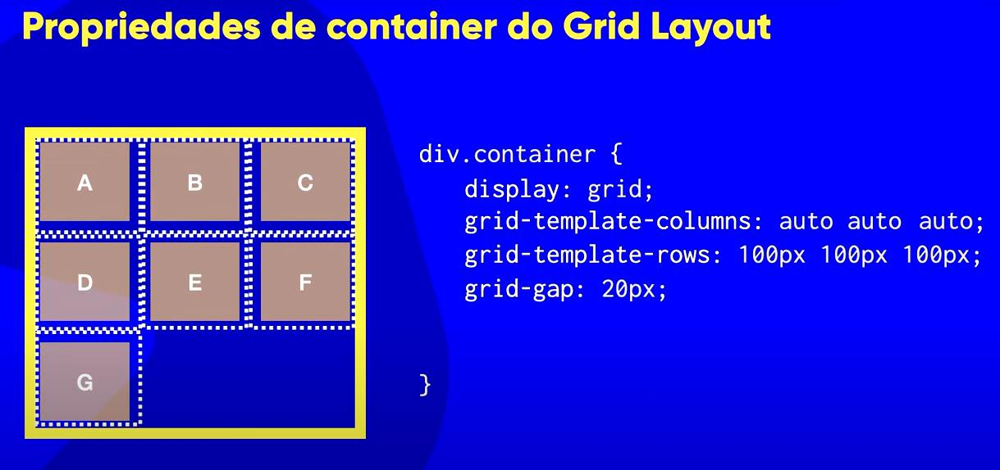
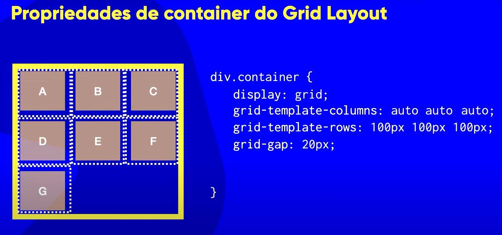

Créditos:
Propriedades de container para Grids (parte 1)
2:10Nesta aula vamos aprender (4)quatro propriedades que se aplicam a um "container" do tipo "Grid Layout".
Veja na imagem abaixo, que propriedades são essas:

Abaixo temos uma Grid_layout 3x3 = (3 tracks verticais e 3 tracks horizontais); Com 4 "grid lines" cada. Então marcamos a parte que envolve o container como podemos observar na imagem abaixo:

'SAIBA' que o Grid é uma estrutura {Bidimensional} enquanto que o 'flexbox' é uma estrutura 'one-dimensional(umidimensional)'.
Um 'flexbox' nos dá apenas a possibilidade de escolher entre o formato de de linha ou o formato de coluna, enquanto que um "Grid Layout" é composto de (2 duas dimensões), que facilita na contrução de interfaces.
É muito comum, pessoas se 'enrolarem' quanto ao uso do 'flexbox' quando querem trabalhar com linhas e colunas, pois o 'flexbox' só nos dá apenas uma única possibilidade, e fora isso é complicado e leva até mesmo a quebra da interface.


 
